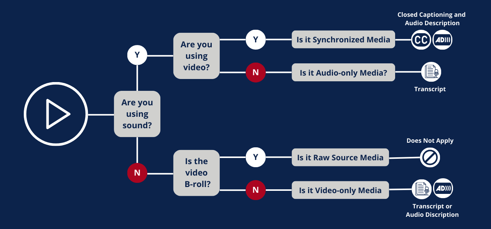

Transcripts are fundamentally important in ensuring that every person who interacts with the content has equal access to engage with the digital media in a meaningful way. When transcripts are not provided, those with disabilities are forced to work around obstacles if they want to use the content.
When considering the implementation of transcripts, it's essential to identify the range of people that this feature can support. Disabilities come in a variety of forms and can be broken down into specific categories to make it easier to consider when you are designing with universality in mind.
Those with sensory and/or intellectual disabilities often benefit the most from the inclusion of transcripts. Sensory disabilities can include visual and/or auditory processing impairments.
Those with visual impairments can use a screen reader to follow along with the video by having the transcript read-aloud to them.
Those with auditory impairments can read the transcript to follow along with the video.
With intellectual disabilities, having another format to display the content of the video can allow users to explore and process the content at their own pace.

Humans have a range of abilities, and these are only a select few examples of people who can benefit from transcripts. Even if you don’t identify as having a disability, transcripts can be helpful if you forgot your headphones or need to find direct quotes for an assignment! That’s the beauty of universal design—everyone can find use from these helpful features.
This lack of inclusive design further isolates those with disabilities and places emphasis on their personal impairment rather than the problem with the design of the digital content.
Intentionally including transcripts is a form of universal design, which mandates the design of products and environments to be usable by all people, without the need for adaptation. When design features such as transcripts are included from the initial stages of the process, customers and designers benefit alike. Transcripts are essential for mandating that everyone has equal ability to engage with digital content and are a major step in reaching universal design as a norm.